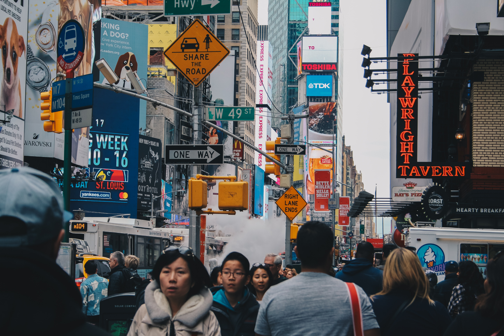

Researrch Assistant under the supervision of Professor Pham, Dr Juan Huang, Dr Yongjing, Dr Chunqian and Dr Shizhong Su.
Tactile Sensing Technologies
IEME 4200
How can cities (especially New York) open up safely and regain their vibrancy?
How can we manage density in cities to take advantage of proximity to other people and minimize the disadvantages?
FBG Sensors
The goal of this project was to find an innovative way to safely bring people together and give cities their vibrancy back during and after the COVID-19 pandemic.